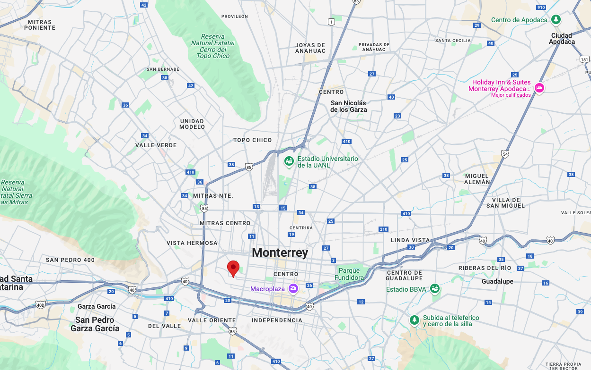

Where Every Brew Tells a Story

Join the Society of Coffee Makers!
Passionate about coffee? Connect with fellow enthusiasts, learn new brewing techniques, and take your skills to the next level. Gain exclusive access to workshops, expert tips, and a vibrant community of coffee lovers. Join us today and elevate your craft!
Join the community!Events
Brewing Masterclasses
Learn brewing techniques, from pour-over to espresso.
Coffee Tasting Sessions
Discover and compare coffee flavors from around the world.
Barista Showdowns
Watch or compete in espresso and latte art challenges.
Coffee Farm Tours
Visit coffee plantations and see the process firsthand.
Blog
Brewer's Corner
Discover new brewing techniques, tips, and gear recommendations to elevate your coffee-making game.
Latest Post: "Mastering the Perfect Pour-Over: A Step-by-Step Guide"
Bean Talk
Explore everything about coffee beans—varieties, origins, and how to choose the best beans for your brew.
Latest Post: "The Best Beans for Espresso Lovers: What to Look For"
Barista Tips
Learn pro barista techniques, from crafting beautiful latte art to perfecting espresso shots.
Latest Post: "How to Create Stunning Latte Art: A Beginner’s Guide"
Contact
C. Washington 2397-2413, Maria Luisa, Nuevo Obispado, 64040 Monterrey, N.L.
81-20-78-77-55
contact@scf.com

“Brewing connections, one cup at a time. Join us and keep the passion for coffee alive!”